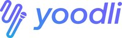
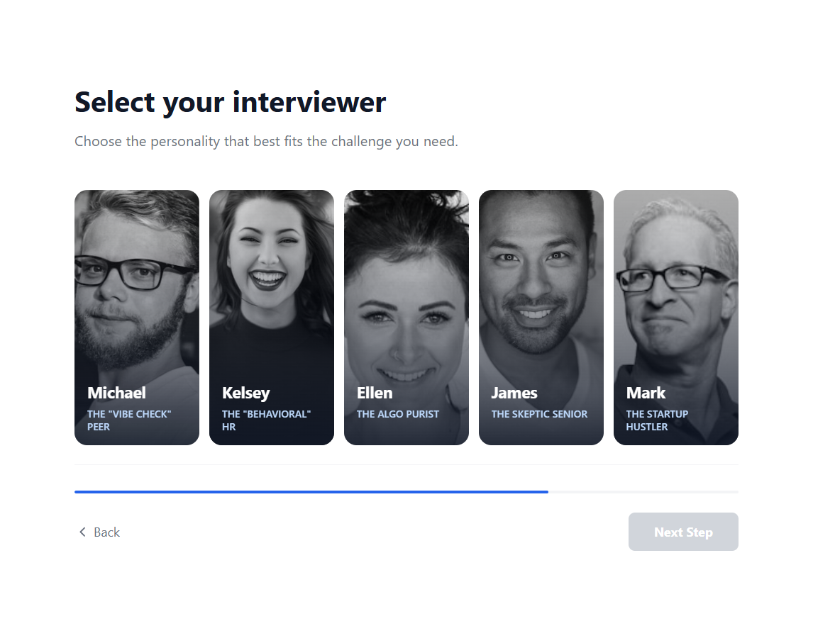
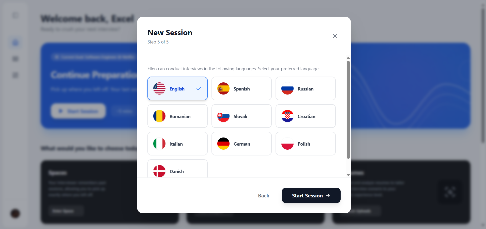
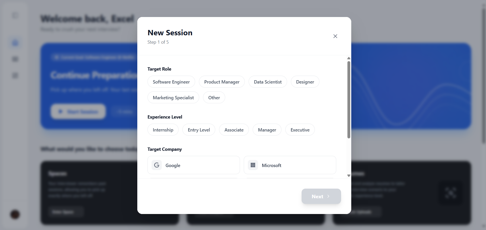
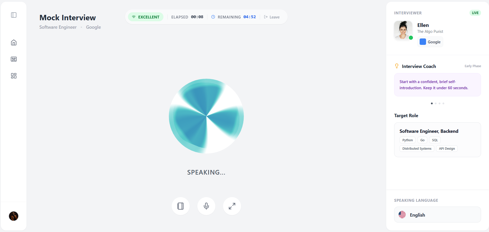
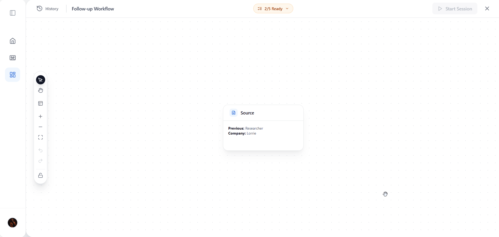
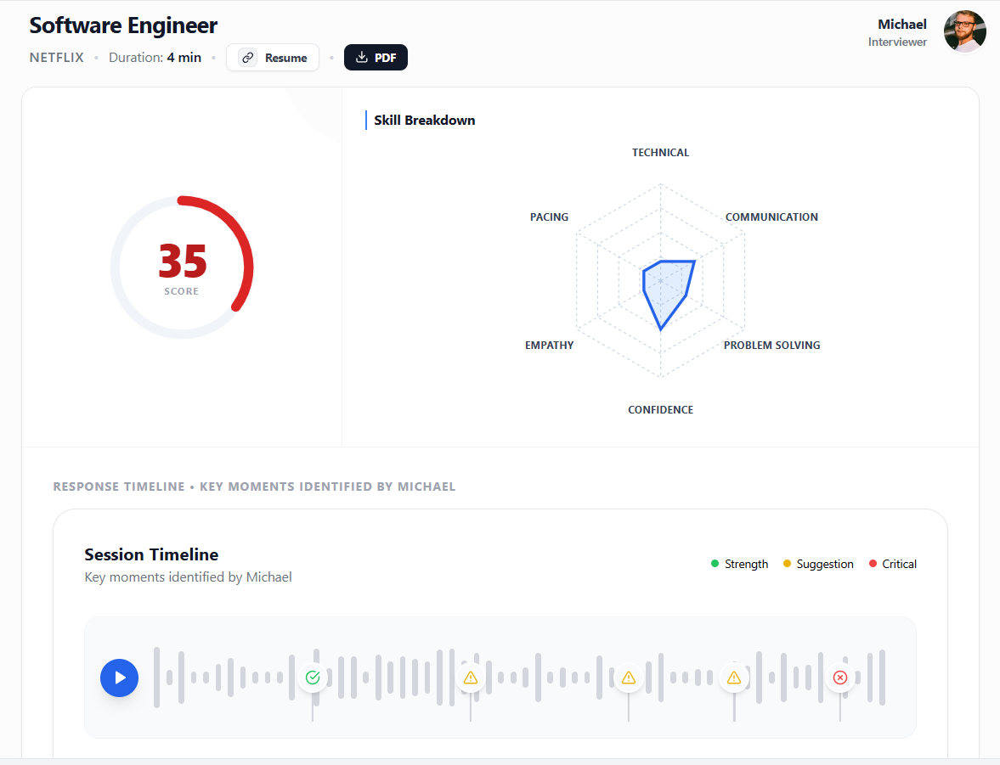
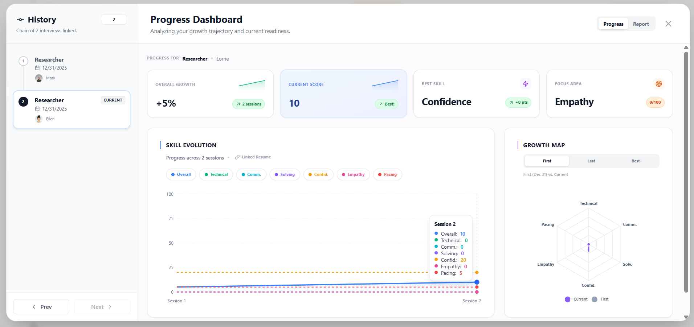

SPARR AI

Sparr AI is a voice-first AI mock interview simulator. Candidates upload their resume, select a target company and role, choose from 5 AI interview personas (each with a distinct voice and personality), then complete a live voice interview. The system generates a detailed report with scored performance, timestamped audio feedback, and specific improvement recommendations. Interviews can be linked into Session Spaces that escalate difficulty based on prior weaknesses.
Traditional interview prep tools are polite, scripted, and predictable. They give the same generic feedback regardless of the candidate's background, tell you "good job" when your answer is mediocre, and never simulate what a real FAANG technical round or a startup culture-fit conversation actually feels like under pressure. The result: candidates walk into real interviews having practiced only for the ideal version of a conversation that rarely exists.
CHAPTER
PROBLEM & CONTEXT
In almost every conversation I had, candidates described some version of the same story: they'd practiced every common question, felt prepared, walked in, and completely unraveled the moment an interviewer pushed back. They'd rehearsed answers to "Tell me about yourself" but had never dealt with a skeptical senior engineer who immediately challenges the technical claims in their resume, or an HR interviewer who subtly probes for inconsistencies in their behavioral stories. The safe, affirming environment of most tools trains the wrong muscle: comfort, not composure under pressure.
Real interview panels are not homogeneous. In a single day a candidate might face a casual peer culture-fit conversation, a deeply technical algorithm discussion in a language they barely know, an HR behavioral screen, and a pragmatic startup founder who just wants to know if you can ship. Each requires a completely different communication style, level of formality, and type of evidence. No single AI persona can simulate all of these. So Sparr ships five, each with a distinct ElevenLabs voice, personality, and evaluation focus.
The most valuable thing an interview simulator can do is not ask better questions. It's to remember what the candidate got wrong last time and push harder there. Static practice is additive: every session is a fresh start. Real interviewers (especially at large companies with looped hiring) do look at past performance signals. Sparr's Session Spaces architecture uses Firestore linked-list chains to create interview continuity, where each new session inherits the context of previous weaknesses, making the AI progressively harder to satisfy on the areas that matter most.

"I can solve most LeetCode mediums. But the moment someone pushes back on my answer, I start second-guessing everything I just said."
Practices alone or with friends who give gentle, encouraging feedback. Has never been challenged mid-answer by someone with no reason to be kind. Every mock interview ends on a positive note. Real interviews don't.
Simulate a skeptical, pressure-heavy technical round so that when the real thing happens, it doesn't feel like the first time he's been pushed.
"I know what I'm capable of. What I don't know is how to communicate that to someone interviewing dozens of people who has no reason to take my word for it."
Moving from business analysis into product management. Different interviewers expect completely different things, and she has no way to practice shifting between a culture-fit conversation and a technical deep-dive.
Exposure to multiple interview styles so she can adapt her approach in real time, not just rehearse a single type of answer until it sounds polished.
CHAPTER
THE SYSTEM





PDF uploaded to backend via Multer. pdf-parse extracts raw text. Gemini receives text, target role, company, and experience level.
Gemini identifies 3–5 specific weaknesses: missing skills, shallow experience in key areas, or credentials that don't match the role requirements.
Weaknesses are injected into the persona's system prompt alongside personality traits, questioning style, and language preference. ElevenLabs receives the final prompt and begins the interview.
CHAPTER
RESULTS & EXECUTION




CHAPTER
LEARNINGS
The ElevenLabs integration performed better than expected. Sub-second voice latency made conversations feel genuinely natural, unlike the stilted turn-taking you get from most voice AI tools. The candidates and engineers who used Sparr during and after the hackathon kept coming back to one thing: Ellen, specifically, felt like a real technical interview, not a chatbot. That was exactly the validation the persona-specific system prompt approach needed. The dynamic prompt approach, where Gemini crafts a fresh persona instruction from scratch for each session by pulling from resume analysis, company context, and prior session data, consistently outperformed the static prompts we tried early on. Every interview felt different.
The Firestore linked-list approach for Session Spaces was clean to implement and scale. I chose parentId/childId document references specifically because it meant no complex graph database was needed. Firestore's document model handled the chain structure naturally. The ReactFlow visualization of the interview chain was one of the features I was most proud of, and it added genuine value beyond aesthetics: candidates could see exactly how their sessions were connected and where they'd been challenged before.
A lot of Sparr's architectural decisions were made fast. We were building under hackathon constraints, and speed forced clarity but also created technical debt. The most obvious place it shows is the resume parsing pipeline. I chose pdf-parse because it was quick to integrate, and it handles most PDF formats well enough. But heavily formatted resumes (tables, columns, custom fonts) produce messy extracted text that confuses Gemini's gap analysis. With more time, I'd swap it for a dedicated document intelligence service like Google Document AI. I'd also parse by section (Experience, Skills, Projects) rather than by raw character count, which would give Gemini a much more structured context to work from.
The report generation could be significantly richer. Right now it produces a single-pass analysis of the full transcript after the interview ends. A better approach would process the transcript progressively during the interview itself, tagging specific moments in real time and building the report as the conversation unfolds. That would also open the door to live coaching, nudging the candidate mid-interview when an answer is going off track, which is something none of the current tools do.